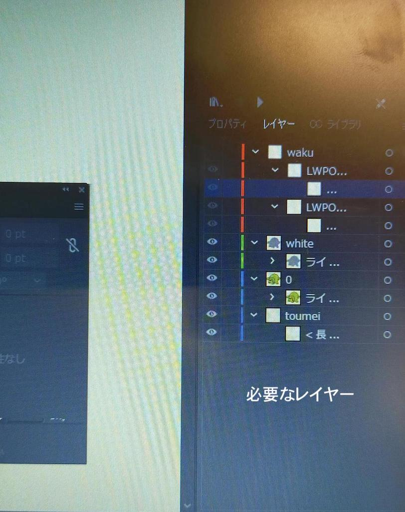
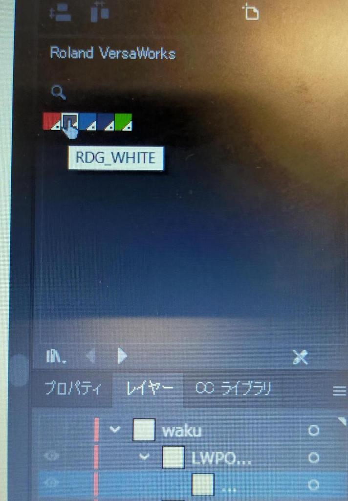
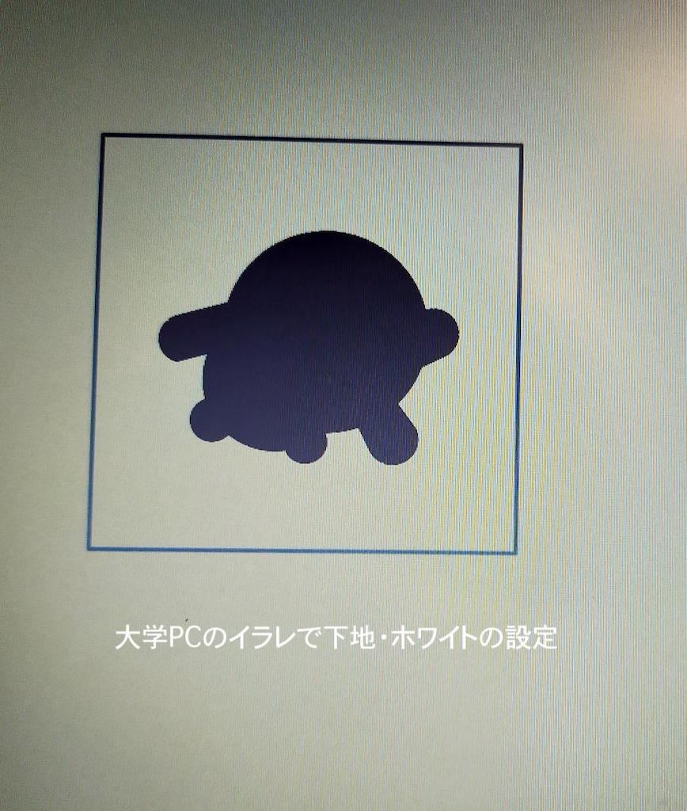
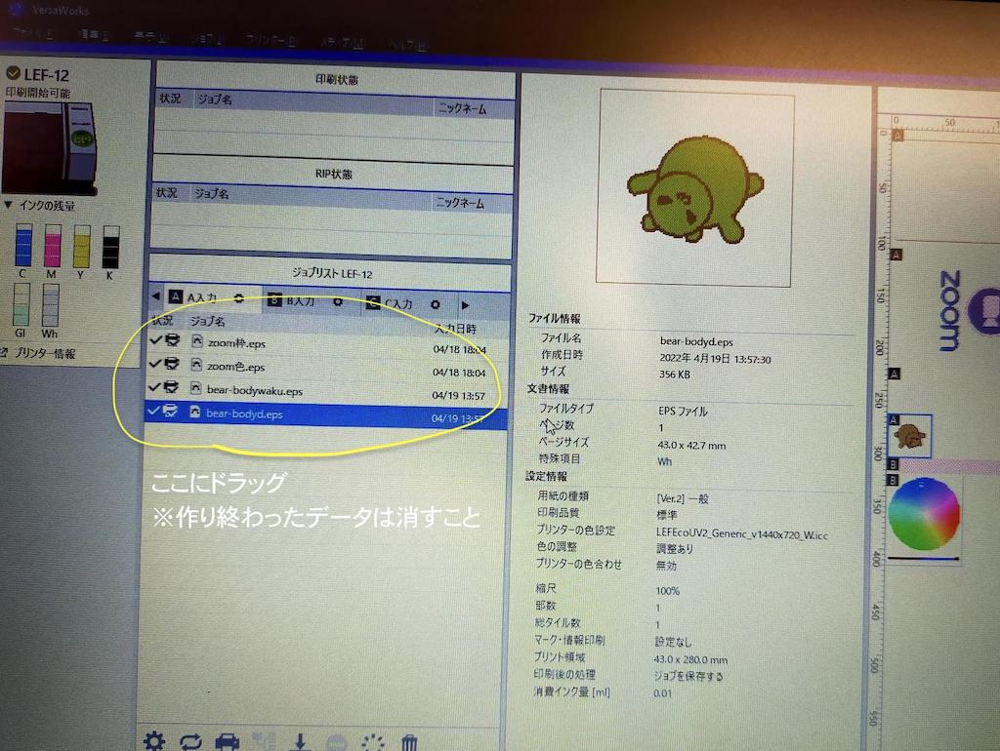
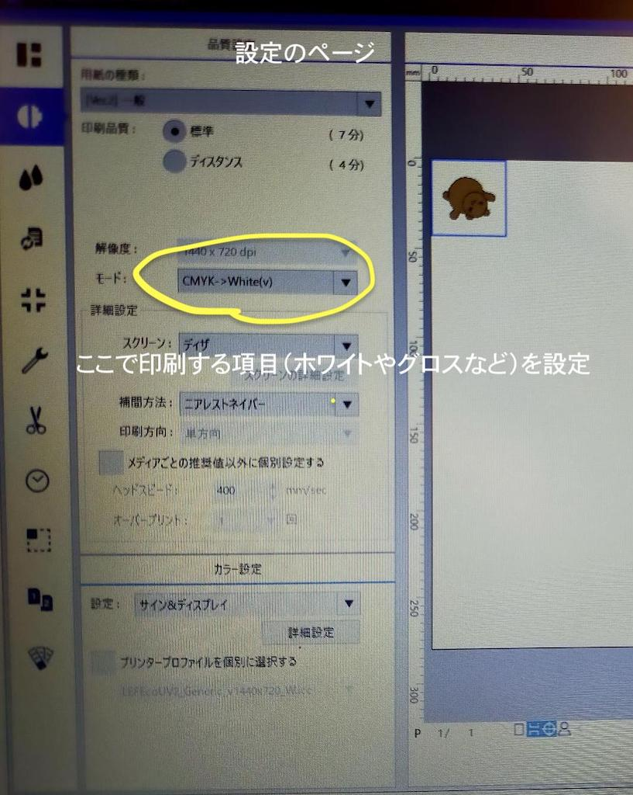

UVプリンターの使い方
- 画像はAdobe Illustratorで作る（拡張子はeps）
- 透明枠と黒枠で保存
→黒枠：枠線が全て埋まる四角を作る、塗り色は全て透明にする
- 透明枠とホワイト（下地）とイラストで保存
→Uvのホワイトやグロス＝ラボPCのイラレに専用の色が設定されている



- 完成したデータをversaworks（アプリ）で開く
- ドラッグしてジョブリストにデータ入れる

- ホワイトの設定は「設定 品質 一般（グロスは特殊仕上げ）」
- 印刷する向きによっては反転が必要（反転設定はレイアウト）

作ったデータ：
イラスト、
枠
前のページに戻る